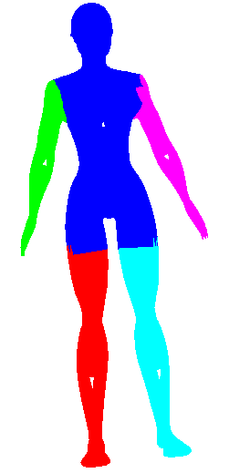

Mesh Segmentation
Introduction
Mesh Segmentation is the process of decomposing a mesh into smaller "segments" (parts) that have semantic meaning. This is actually an ill-posed definition, though, because it is unclear what "semantic meaning" is. Many groups in the past 10 years have defined the problem as some subset assignment of the mesh that minimizes an objective function. Then results come out and much hand-waving is done to say "oh this looks plausible."
Luckily, a SIGGRAPH 2009 paper came out of Princeton that is a more rigorous benchmark for mesh segmentation evaluation. The basic idea was to use a Mechanical Turk to collect data on how humans would cut a surface into different parts, and to compare algorithms to that data. The paper can be found here:
Xiaobai Chen, Aleksey Golovinskiy, and Thomas Funkhouser,
A Benchmark for 3D Mesh Segmentation
ACM Transactions on Graphics (Proc. SIGGRAPH), 28(3), 2009.
In this assignment I will implement a simple (but quick) K-Means algorithm for decomposing a mesh, based on the work in the following paper:
Shlafman, S., Tal, A. and Katz, S. (2002), Metamorphosis of Polyhedral Surfaces using Decomposition. Computer Graphics Forum, 21: 219–228. doi: 10.1111/1467-8659.00581
Algorithm Overview
The algorithm that I'm implementing is an iterative algorithm. The basic idea is to make an initial guess about faces that cluster to each segment, and then to iteratively improve the cluster centers and segment guesses until convergence. At every step, there is exactly one face per cluster that represents its "center," and these cluster centers are what undergo iterative improvement. The process is as follows:
- The first step is to compute a "distance" between adjacent faces on a mesh. This distance can then be propagated to non-adjacent faces using shortest paths (explained a bit later), but assume for now that all that's done in this step is to compute the distance between adjacent faces. The distance should be chosen so that faces on the mesh within a segment are close to each other, so that the segments we want will cluster together. In ShalfmanTalKatz, the distance is chosen as part Geodesic Distance, or distance along the surface (as opposed to Euclidean Distance) and part Dihedral Angle, or angle between the normals of faces. The distance includes a geodesic part to make sure that clusters are continuous across the surface, and it includes a dihedral angle part to encourage segment boundaries around areas of high curvature (such as the place where the arm connects to the rest of the body; this cue wouldn't be picked up merely by geodesic distance).
The actual definition of the distance between faces I use is as follows (I will refer to it as "mesh distance" from now on):
MeshDistance = 0.5*PhysDist + 0.5*(1-cos^2(dihedral angle))
where PhysDist is the sum of the distances from the centroid of each face to the center of their common edge (borrowed from the ShlafmanTalKatz paper). Note also that since the second term includes 1-cos^2(dihedral angle), the distance is greater when the angle is closer to 90 degrees.
To find the distance between non-adjacent faces, I use Dijkstra's algorithm (described more below).
- The next step is to make an initial guess on faces that represent the center of each cluster. This is a very important step because, like all iterative nonlinear algorithms, this needs a good initial guess to converge to a good local minimum (also it will converge faster with a better initial guess). Let us assume for the moment that k clusters have been chosen ahead of time (I will explain how to automatically determine k later if the user so chooses). Choose the first cluster center to be the face on the mesh that is closest to the Eucliden centroid of all faces. I choose it to be the centroid of the faces in Euclidean space because this is significantly easier to compute than if I had used the original distance metric defined in step 1, and because it should still give a pretty good guess of a face that is close to the center of all faces for many models (and this will be iteratively improved anyway).
To choose the second face, I compute the mesh distance from this first cluster face to all other faces using Dijsktra's algorithm. I choose the second cluster center to be the one that's furthest from the first one using this metric. To choose the third face, I compute the geodesic distance from the second cluster to all faces, and I choose the face that's furthest from the average of the distance to cluster centers 1 and 2. This process (finding the face furthest from the average of all mesh distances from the cluster centers chosen so far) continues until there are k clusters chosen.
- Once there is an initial "seed" choice of cluster centers, the iterative part of this algorithm can begin. I already have k arrays of mesh distances from the k cluster centers to all other faces, so for each face, I find the cluster to which it is the closest (using mesh distance). The set of all faces that "belong" to a cluster center forms a segment. Once this has been done to compute all segments, find a new cluster center in each segment. Do this (once again) by taking the closest face to the Euclidean centroid of all faces. Even though this isn't the most "correct" approach (since the mesh distance is really what's used to cluster), it's really fast because I only have to compute the mesh distance between the cluster centers and the rest of the faces, not between all n^2 pairs of faces.
If any of the cluster centers change, recompute the mesh distance from all faces to the new center using Dijkstra's. NOTE: When convergence gets closer a lot of the cluster centers don't change, so I can re-use a lot of the computation I've already done computing the mesh distances.
- Repeat step 3 until convergence (none of the cluster centers change) or for a maximum of 50 iterations to obtain the final segmentation
Automatically Choosing Number of Clusters
In the actual tests I run on the shape benchmark, I have the program automatically determine the number of clusters to save time. Basically, I follow step 2 as before to make the intial guesses; I simply continue to add new cluster centers in that manner until the cluster added is "too close" (less than eps mesh distance) to one of the existing cluster centers. I can't hardcode this eps distance cuttof in though, because it needs to be independent of the scale of the mesh. So I choose eps at the beginning to be the mean distance from the first cluster to all other faces, divided by 1.5. This seems to work pretty well in practice.
Trading off Geodesic Distance and Dihedral Angle
When computing the mesh distance, there is a trade-off including the Geodesic term and the dihedral angle term. By default they are weighted evenly, but let me show what happens to the initial clusters skewing the distance to one extreme and the other. In the table below, "Delta" refers to the ratio that's given to Geodesic Distance (delta=1 is all geodesic no dihedral, delta=0 is no geodesic all dihedral)
| Delta | Iteration 1 (Initial Guess) | Iteration 2 | Iteration 3 |
| 1.0 |  |  | |
| 0.0 |
See how above how using Geodesic distance alone wasn't able to pick out many of the finer protrusions (fingers or even the head), while using dihedral angle pretty much only picked out the finer protrusions (and didn't cluster well in the long run). So some trade-off is clearly needed (I simply choose 0.5 in the rest of my evaluations). Also note how in iteration 2 of the geodesic-only segmentation, the arm segments creep into the torso in a strange way. The dihedral angle would have discouraged this (since there is a large dihedral angle at the boundary between the arm and the torso).
Results
I rand my segmentation algorithm on the shape benchmark as promised. Click here to see pictures of the segmentations. Clearly they aren't perfect, but how do they measure up to the human segmentations? Here is quantitative information spit back from the shape benchmark comparing this technique to the human technique to other algorithms.
Rand Index for four levels
Evaluation Results by Different metrics
Consistency Error |
Hamming Distance |
Cut Discrepancy |
Rand Index |
My algorithm ("MySeg") is the worst in terms of performance, but its error rate is pretty similar to the other "kmeans" implementation, which is encouraging since I'm not sure if I even managed to find the best parameters. One other thing that I will say is that although my technique isn't the most accurate, it can be computed extremely quickly and is easy to implement, so perhaps it can be used in a setting with limited processing power to get a workable initial guess of a segmentation.
Program Usage
seg inputMesh outputMesh segmentationFile -optionsThe options are as follows:
| -v | Verbose: This is mostly used to print out the chosen cluster centers at each iteration |
| -doViewer [iteration_num] | View the results of the iteration_numth iteration. I modified the viewer from the laplacian mesh assignment to draw the colored segments so the user can interact and look at the segmentation from may different angles |
| -clusterCenters [filename] | The name of the file to which to output cluster centers |
| -nsegment [numSegments] | Manually choose the number of segments (if this parameter is omitted, the number of segments will be chosen automatically). |
| -delta [delta] | Choose the "delta" value (described earlier) to trade-off geodesic versus dihedral angle in the mesh distance |
| -viewResults | This will launch a viewer for every iteration of the clustering algorithm (I used this for debugging). NOTE that the clusterCenters argument should also be defined to save them cluster centers because I visualize them (otherwise the program will crash looking for them) |
blog comments powered by Disqus